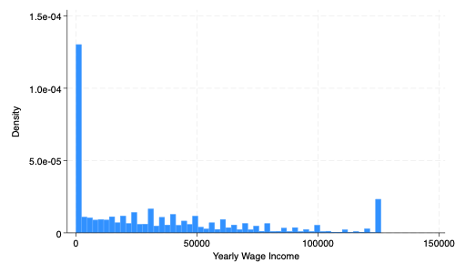

** Set Path **
cd "/Users/egong@middlebury.edu/Library/CloudStorage/Dropbox/Middlebury/Course_Archieve/Spring_2026/ECON_0111/2_Assignments/Labs/Lab_1"ECON 111 - Lab 1 : Intro to STATA
Summary Statistics
Preliminaries
Before beginning this lab, make sure you’ve done the following:
In your Google Drive, make sure you have a folder “Lab_1”
Downloaded the dataset “acs_2018.dta” from the Econ 0111 Google Drive Folder
Intro to STATA
STATA is a statistical software package used by many economists. There are roughly two ways of doing things in STATA: 1) using the pull down menu and 2) coding in a DO file.
We will learn how to code in STATA using a DO file. The best way to learn is a process of trial and error, where you write and run code and see what happens.
Open and Save a DO file
Click on “Do File Editor” and then File>Save As and save this file as “Lab_1.do” in your Lab_1 folder.
We will write STATA code in your DO file. To execute code, highlight it and then click “Do”.
Syntax
For comments, type ** and STATA will know to not to execute this as code. Comments appear in green while STATA commands will appear in blue.
Set Path
The first step is to set the path. Using your Google Drive in either your Finder (Mac) or File Explorer (Windows) go to the Lab_1 folder and copy and paste the paste the path after cd
cd stands for “change directory” - this “tells” STATA where your dataset is located.
Open the dataset
We will now open the dataset and then use the command describe or des to display the variables (columns) in the dataset. Type the following in your DO file, highlight them, and then press “Do”.
use acs_2018.dta, clear
describe
Contains data from acs_2018.dta
Observations: 383,906
Variables: 10 7 Feb 2024 10:13
-------------------------------------------------------------------------------
Variable Storage Display Value
name type format label Variable label
-------------------------------------------------------------------------------
person_id float %9.0g id number
STATE str20 %20s State of Residence
Black str3 %9s Black
White str3 %9s White
age byte %8.0g Age
incwage long %12.0g Yearly Wage Income
educd str46 %46s Highest Education Completed
educ_hs byte %8.0g equals 1 if hs diploma
educ_ba byte %8.0g equals 1 if ba degree
educ_ma byte %8.0g equals 1 if ma degree
-------------------------------------------------------------------------------
Sorted by: Question 1: Type browse in the command line. How do the results from the describe command compare to what you see in the dataset?
Summary Statistics
The summarize command will provide summary statistics for each variable (column).
summarize
Variable | Obs Mean Std. dev. Min Max
-------------+---------------------------------------------------------
person_id | 383,906 191953.5 110824.3 1 383906
STATE | 0
Black | 0
White | 0
age | 383,906 42.41391 14.13208 18 65
-------------+---------------------------------------------------------
incwage | 383,906 33828.55 36882.89 0 126000
educd | 0
educ_hs | 383,906 .4912192 .4999235 0 1
educ_ba | 383,906 .2018228 .4013612 0 1
educ_ma | 383,906 .0851094 .2790448 0 1Question 2: Looking at the dataset and summary statistics, what is the unit of observation? In other words, what does each row represent? And how many observations does the dataset contain?
Distributions
We can look at the distribution of income using the histogram command. We can also export it as a .png so we can use it in reports, problem sets, and papers. You can simply drag-and-drop the .png file into your document.
histogram incwage
graph export incwage.png, replace
We can also look at the mean, median, and standard deviation of income.
sum incwage, detail
Yearly Wage Income
-------------------------------------------------------------
Percentiles Smallest
1% 0 0
5% 0 0
10% 0 0 Obs 383,906
25% 0 0 Sum of wgt. 383,906
50% 24000 Mean 33828.55
Largest Std. dev. 36882.89
75% 52000 126000
90% 92000 126000 Variance 1.36e+09
95% 126000 126000 Skewness 1.088602
99% 126000 126000 Kurtosis 3.258034The mean is 33828, the median is 24000, and the standard deviation is 36882.
Question 3: Why do you think the mean is greater than the median?
Generating variables
We can add new variables to our dataset. Let’s generate a variable “old” for individuals over the age of 40. The syntax is as follows. We use the if statement to define when the variable “old” takes values of 1 and 0. We then use the tab command to see the distribution of this new variable.
gen old = 1 if age>=40
replace old = 0 if age<40
tab old(167,100 missing values generated)
(167,100 real changes made)
old | Freq. Percent Cum.
------------+-----------------------------------
0 | 167,100 43.53 43.53
1 | 216,806 56.47 100.00
------------+-----------------------------------
Total | 383,906 100.00Question 4: How many old people are in the dataset? What percentage of the dataset do they make up?
Conditional Distributions
Let’s look at the distribution of income for old and young people.
Question 5: Take a look at the following code. What do you think will be generated when we execute it? After you write down your prediction, run the code and see what happens.
histogram incwage if old==1
graph export incwage_old.png, replace
histogram incwage if old==0
graph export incwage_young.png, replaceProtip: Never Save the dataset!
It sounds counter-intuitive, but never save the dataset. To be specific, never overwrite the original or “raw” dataset (acs_2018). Why? Once you do, you can never recover the original dataset and this DO file will be not work. Why? It’s going to duplicate things you already did, such as generating a variable (old).
Save the DO file instead. And if you really need to save the dataset, use a different name, like acs_2018_v2.dta.
Question 6: What will happen when you run the following code? Write it down. Then run the code.
sum incwage if old==1, detail
sum incwage if old==0, detailQuestion 7: Compare the distributions of income between old and young.
What if you are working with a variable that takes text instead of numerical values? What if you want a variable that is not equal?